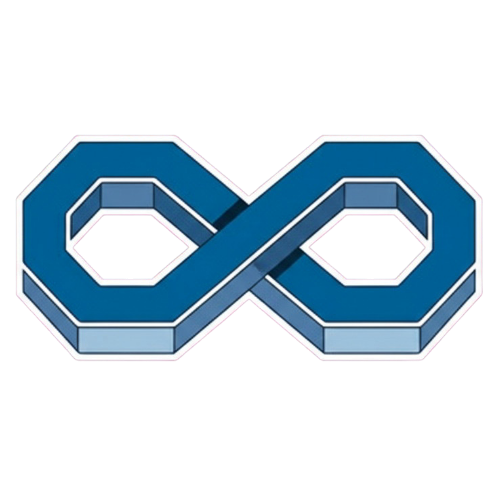

01 — Differentiator card
Con ícono ilustrado, hover lift
Trato 1 a 1
Cada cliente tiene contacto directo con su asesor. Sin call centers ni tickets.

Sin catálogo cerrado
Cualquier servicio TI que necesites lo conseguimos o lo construimos.
A la medida
Soluciones diseñadas para tu operación, no recetas genéricas.